ECG Blog #336 — Không thể phân loại. Vì sao?
Ca bệnh: Một phụ nữ lớn tuổi bị chóng mặt trong vài tháng.
- THỬ THÁCH: Đúng như tiêu đề của bài này — Có thật là không thể phân loại mức độ blốc AV?

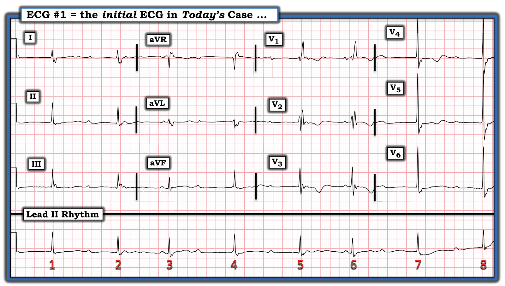
Cách tiếp cận CỦA TÔI với điện tâm đồ ở Hình-1:
Như mọi khi – tôi thích bắt đầu diễn giải bằng việc đánh giá dải nhịp chuyển đạo dài — dùng Cách tiếp cận Ps, Qs & 3R để nhớ lại 5 Thông số CHÍNH (Xem ECG Blog 185). Tôi thấy dễ nhất (và hiệu quả nhất) là hoãn việc đánh giá điện tâm đồ 12 chuyển đạo cho tới sau khi đã có dịp xem xét nhịp.
- Nhịp chậm và không đều.
- Mặc dù khi mới nhìn dải nhịp chuyển đạo II dài, QRS trông không quá rộng — chỉ cần liếc nhanh nhát #5 và 6 ở các chuyển đạo V1,V2,V3 ghi đồng thời là thấy rõ ràng QRS giãn rộng. Dù vậy — hình dạng QRS ở chuyển đạo V1 gợi ý có dẫn truyền kiểu RBBB (blốc nhánh phải – Right Bundle Branch Block) — điều này được củng cố bởi sóng S tận cùng (terminal S) rộng ở các chuyển đạo bên I và V6.
- Vì vậy, mặc dù QRS giãn rộng ở Hình-1 — nhịp này ít khả năng xuất phát từ cơ tim thất (tức là, ít khả năng xuất phát từ bên ngoài hệ thống dẫn truyền).
- LƯU Ý: Lý do QRS lúc đầu trông "hẹp" trên dải nhịp chuyển đạo II dài — là vì có sóng S tận cùng rộng — và một phần của sóng lệch tận cùng này của QRS nằm trên đường đẳng điện.
ĐIỂM THEN CHỐT (PEARL) #1: Như tôi vẫn thường nhấn mạnh — bước đơn giản là đánh dấu sóng P lại hữu ích đến kinh ngạc để: i) Xác định XEM có nhịp nhĩ nền đều (hoặc gần đều) hay không; và, ii) Giúp đánh giá xem một số (hoặc tất cả) sóng P bạn nhận ra có (hay không) Liên quan với các phức bộ QRS lân cận.
- Ở Hình-1 — tôi bắt đầu “Tìm sóng P” — bằng cách đánh dấu những sóng P mà tôi chắc chắn là có mặt. Tôi đã làm việc này bằng các mũi tên ĐỎ ở Hình-2.
- Đặt compa đo (calipers) theo khoảng P-P tại một trong 2 vị trí trên dải nhịp chuyển đạo II dài nơi có 2 sóng P mũi tên ĐỎ liên tiếp (tức là, theo khoảng P-P ngay trước và sau nhát #3 — hoặc ngay trước và sau nhát #6) — tôi đã có thể "dò bước" ra một số sóng lệch bị che khuất một phần, đại diện cho các sóng P bổ sung (mũi tên HỒNG ở Hình-2).
- Tính đến sự dao động nhẹ của khoảng P-P vốn rất thường gặp — hợp lý khi dự đoán rằng 2 sóng P xoang khác có lẽ đang ẩn bên trong QRS của nhát #1 và 7 (mũi tên TRẮNG ở Hình-2).

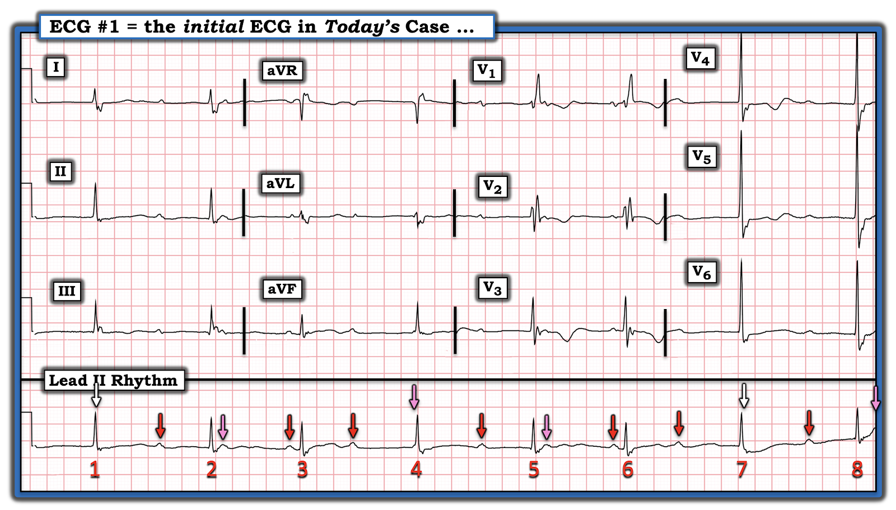
ĐIỂM THEN CHỐT #2: Khi có một dạng blốc AV phức tạp — MANH MỐI tôi ưa dùng nhất cho thấy một nhát nhiều khả năng được dẫn truyền — là NẾU bạn thấy một nhát đến sớm-hơn-dự-kiến.
- Ngoài việc đến sớm-hơn-dự-kiến — bằng chứng thêm cho thấy nhát #3 và nhát #6 ở Hình-2 đều được dẫn truyền đến từ: i) Việc cả hai nhát này đều đi sau cùng một khoảng PR bình thường (tức là, ~0.16 giây); ii) Nhìn vào chuyển đạo V1 ghi đồng thời ở nhát #6 gợi ý hình dạng RBBB (blốc nhánh phải – Right Bundle Branch Block) rất điển hình — dưới dạng rSR' (với sóng S đi xuống dưới đường đẳng điện ở chuyển đạo V1 — và sóng lệch R' tận cùng dạng "tai thỏ phải cao hơn"); và, iii) Nhát #3 và nhát #6 là những nhát duy nhất ở Hình-1 đi sau một khoảng PR bình thường — trong khi không khoảng PR nào khác đi trước 6 nhát còn lại trên bản ghi này có vẻ dẫn truyền được (tức là, mặc dù các khoảng PR khác trông tương tự — những khoảng PR này khá dài, và phần lớn khác nhau).
- LƯU Ý: Để tìm hiểu thêm CÁCH nhận biết một sóng P có (hay không) nhiều khả năng dẫn truyền — Hãy xem Audio Pearl ở PHẦN BỔ SUNG bên dưới.
Những gì chúng ta đã xác định cho tới giờ:
Về nhịp trong ca hôm nay — cho tới giờ chúng ta đã xác lập được các điểm sau:
- Mặc dù QRS hơi giãn rộng — cả 8 nhát trong nhịp hôm nay có vẻ đều là nhịp trên thất — và biểu hiện dẫn truyền kiểu RBBB (với hình dạng RBBB ba pha rất điển hình ở chuyển đạo V1 — và sóng R dương với sóng S tận cùng rộng ở các chuyển đạo bên I,aVL; và V5,V6).
- Có một nhịp nhĩ nền đều (mũi tên ĐỎ ở Hình-3).
- Nhát #3 và #6 đều được dẫn truyền từ xoang — bằng chứng là chúng đến sớm-hơn-dự-kiến — và vì cả hai đều đi sau một khoảng PR bình thường và bằng nhau (Hình-4).
- Xem xét các khoảng R-R được đo cẩn thận trình bày ở Hình-4 — gợi ý rằng ngoài 2 nhát dẫn truyền từ xoang ( = nhát #3 và 6) — 6 nhát còn lại trên bản ghi hôm nay là các nhát thoát bộ nối. Lý do: i) Các khoảng PR đi trước những nhát khác này dài — và phần lớn khác nhau; ii) Các khoảng R-R đi trước mỗi nhát này giống hệt nhau (tức là, 1,350 ms); và, iii) Hình dạng QRS của các nhát thoát bộ nối này giống hình dạng QRS của 2 nhát dẫn truyền từ xoang (trong khi các nhát thoát thất sẽ có hình dạng QRS khác).

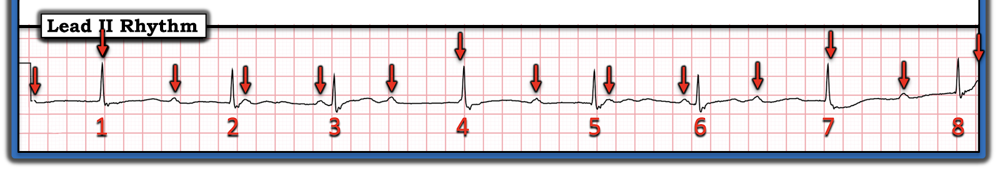

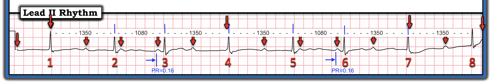
Tổng Hợp Tất cả Lại:
Theo định nghĩa, nhịp hôm nay là một dạng nào đó của blốc AV độ 2 vì: i) Có nhịp xoang nền đều (hoặc ít nhất là khá đều); và, ii) Một số sóng P có dẫn truyền (tức là, nhát #3 và 6) — nhưng các sóng P khác lẽ ra phải dẫn truyền thì lại không dẫn truyền.
- ĐIỂM THEN CHỐT #3: Để xác định blốc AV độ 2 trong ca hôm nay “nặng” đến mức nào — chúng ta cần xem có bao nhiêu nhát không dẫn truyền mặc dù có đủ cơ hội để dẫn truyền. Điều này được minh họa dễ nhất bằng chuỗi các giản đồ bậc thang (laddergram) mà tôi dựng dưới đây từ Hình-6 đến Hình-11.
ĐIỂM THEN CHỐT #4: Giờ đã xác định có blốc AV độ 2 — chúng ta cần quay lại điện tâm đồ 12 chuyển đạo ban đầu ở Hình-1 — để xem NẾU nó cho thấy một nguyên nhân tiềm ẩn của rối loạn nhịp này. Để tiện theo dõi — tôi đã đặt lại điện tâm đồ 12 chuyển đạo và dải nhịp của bản ghi hôm nay ở Hình-5.
- Chúng ta đã ghi nhận có dẫn truyền kiểu RBBB — cả ở các nhát dẫn truyền từ xoang ( = nhát #3 và 6) — lẫn các nhát thoát bộ nối ( = nhát #1,2; 4,5; 7,8).
- Có LVH (phì đại thất trái – Left Ventricular Hypertrophy) — vì ngay cả khi có RBBB (vốn làm thay đổi cả biên độ QRS lẫn hình dạng sóng ST-T) — biên độ sóng R tăng rõ rệt ở chuyển đạo V5 và V6 của Hình-5 rõ ràng thỏa tiêu chuẩn điện thế LVH (Xem ECG Blog #245 để ôn lại các tiêu chuẩn LVH).
- Mặc dù đánh giá thiếu máu cục bộ trên điện tâm đồ khi có blốc nhánh thường khó hơn — hiện tượng sóng ST-T dẹt ở nhiều chuyển đạo trong Hình-5 (thấy ở chuyển đạo I,II,III; aVL,aVF; và V5,V6) — không phải là đáp ứng bình thường khi chỉ có RBBB đơn thuần.
- Như đã nhấn mạnh ở ECG Blog #204 — với RBBB hoặc LBBB, điều bình thường (và đúng như dự kiến) là hướng của sóng ST-T ở 3 Chuyển đạo CHÍNH ( = chuyển đạo I,V1,V6) — ngược hướng với sóng lệch cuối cùng của QRS. Vì sóng lệch cuối cùng của QRS ở chuyển đạo V1 của Hình-5 là R' dương — nên sóng ST-T chênh xuống mà ta thấy ở chuyển đạo này là không bất thường.
- ĐIỂM THEN CHỐT #5: Với RBBB đơn thuần — mức độ tương đối của ST-T chênh xuống mà bạn thấy ở các chuyển đạo ngực phía trước phải lớn nhất ở chuyển đạo V1 — và giảm dần khi đi từ chuyển đạo V1-sang-V2-sang-V3 — rồi cuối cùng biến mất khi đi tới các chuyển đạo ngực phía bên hơn. Điều này ngược lại với những gì ta thấy ở Hình-5 — vì kích thước của sóng T đảo ngược là lớn nhất ở chuyển đạo V3 (thay vì ở chuyển đạo V1) — và sóng T đảo ngược kéo dài tới tận chuyển đạo V5 (trong khi bình thường sẽ không có sóng T đảo ngược ở các chuyển đạo ngực bên nếu chỉ có RBBB đơn thuần). Điều này gợi ý mạnh rằng ngoài RBBB — còn có dấu hiệu thiếu máu cục bộ chưa rõ thời điểm.
- KẾT LUẬN: Bệnh sử trong ca hôm nay — là một phụ nữ lớn tuổi bị chóng mặt trong khoảng thời gian vài tháng. Với sự hiện diện của RBBB và các thay đổi sóng ST-T do thiếu máu cục bộ đã mô tả ở trên — có thể nguyên nhân gây các rối loạn dẫn truyền ở bệnh nhân này là một "biến cố" (tức là, nhồi máu) đã xảy ra vào một thời điểm nào đó trong vài tháng qua, khoảng thời gian mà bệnh nhân bị chóng mặt.

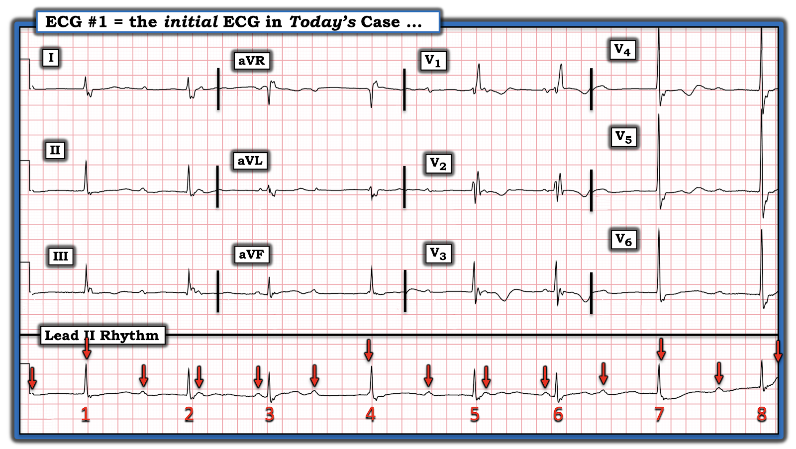
Xác nhận Cuối cùng về Nhịp trong ca hôm nay:
Cách TỐT NHẤT để chứng minh cơ chế của một nhịp tim phức tạp — là dựng tuần tự một giản đồ bậc thang (Laddergram) — mà tôi minh họa theo kiểu từng bước một qua 6 Hình tiếp theo.
- LƯU Ý: Để tìm hiểu thêm cách đọc (và/hoặc vẽ) giản đồ bậc thang — Mời xem ECG Blog #188 (gồm các tài liệu hỗ trợ giảng dạy + ĐƯỜNG LINK tới hơn 50 giản đồ bậc thang có minh họa mà tôi đã công bố).
Bắt đầu với Hình-6:

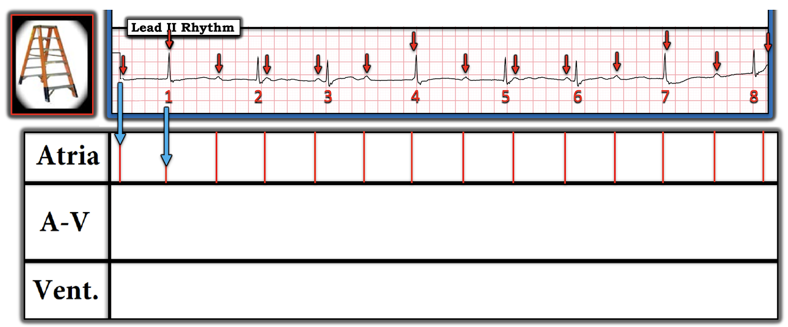

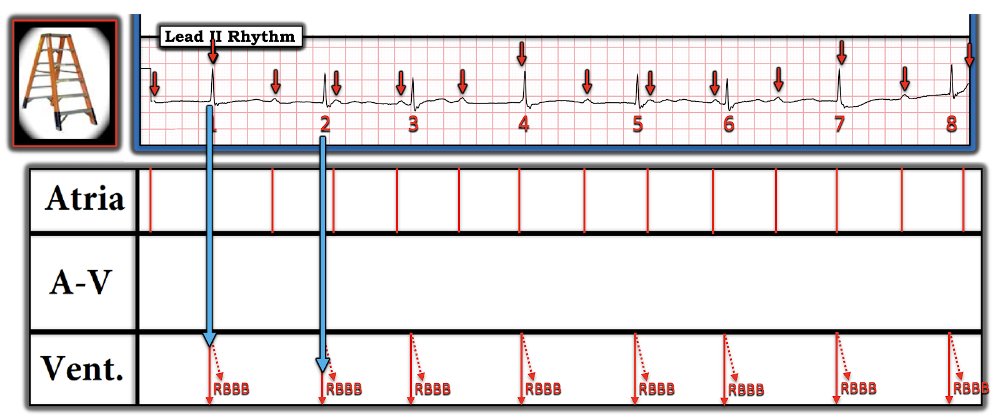

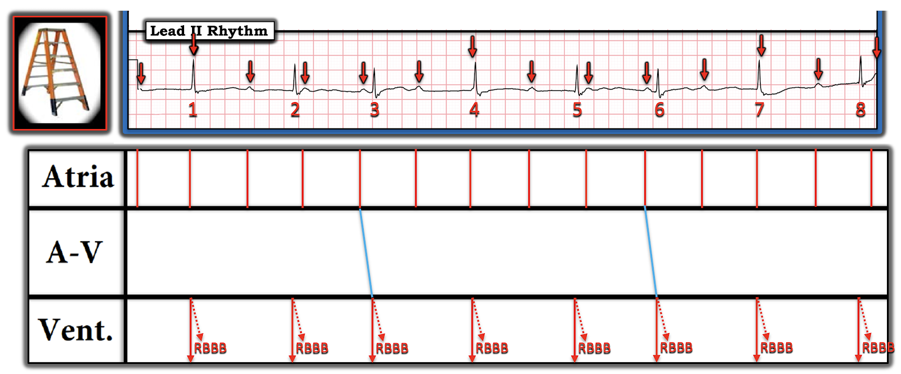

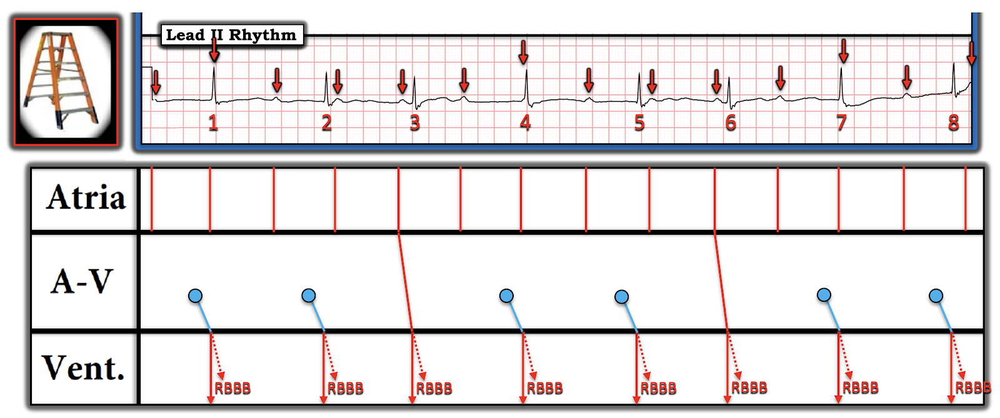

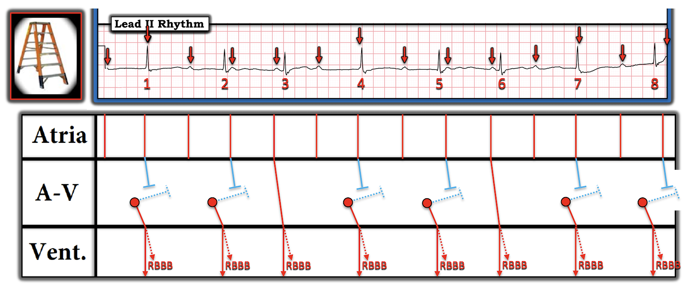

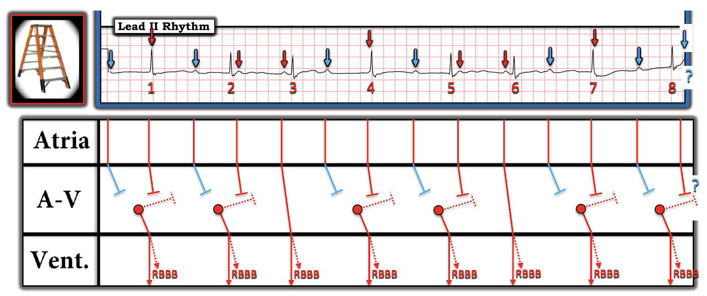
KẾT LUẬN: Từ Hình-11 cuối cùng trong giản đồ bậc thang đề xuất của tôi — hẳn đã rõ rằng cơ chế tôi nghiêng về cho nhịp hôm nay là blốc AV độ 2.
- Từ dải nhịp ngắn chỉ có 8 nhát hiện có — không thể biết nhịp hôm nay là dạng Mobitz I hay Mobitz II của blốc AV độ 2. Lý do là chúng ta không bao giờ thấy 2 nhát dẫn truyền liên tiếp. Vì vậy, chúng ta KHÔNG biết LIỆU khoảng PR có dài ra hay không NẾU nó có cơ hội để làm vậy.
- Ủng hộ Mobitz I — là việc dạng blốc AV độ 2 này phổ biến hơn nhiều so với dạng Mobitz II (Theo kinh nghiệm của tôi — trên 90-95% mọi blốc AV độ 2 là Mobitz I). Đây là "tin tốt" — vì tiên lượng dài hạn của Mobitz I nhìn chung tốt hơn nhiều so với Mobitz II, loại gần như luôn cần tạo nhịp vĩnh viễn.
- Dù vậy — sự hiện diện của QRS giãn rộng (ở đây dưới dạng RBBB nền) — có làm tăng khả năng Mobitz II.
- ĐIỂM THEN CHỐT #6: Lưu ý ở Hình-11 — rằng chúng ta không bao giờ thấy 2 sóng P mũi tên XANH DƯƠNG liên tiếp! Tức là, chúng ta không bao giờ thấy 2 sóng P liên tiếp lẽ ra phải dẫn truyền mà lại không dẫn truyền. Do đó — chúng ta KHÔNG biết blốc độ 2 trong ca hôm nay có phải là một dạng blốc AV "mức độ cao" hay không (hay chỉ là Mobitz I đơn thuần mà không thấy khoảng PR dài dần do bị các nhát thoát bộ nối cắt ngang).
- Đáng tiếc — tôi không có thông tin theo dõi ca này. Giả sử không tìm thấy gì "sửa được" (tức là, Không có nhồi máu gần đây; xét nghiệm tuyến giáp và điện giải bình thường) — tôi đoán bệnh nhân này rồi sẽ phải đặt máy tạo nhịp vĩnh viễn vì: i) Bà ấy lớn tuổi; ii) Tần số thất chung của bà chỉ ở mức 40 mấy nhịp/phút; và, iii) Bệnh nhân này đã có triệu chứng trong nhiều tháng.
==================================
Lời cảm ơn: Xin cảm ơn 陳俊宏 = Chun-Hung Chen (đến từ thành phố Đài Trung, Đài Loan) đã cung cấp ca bệnh và bản ghi này.
==================================
Các bài ECG Blog liên quan đến ca hôm nay:
- ECG Blog #205 — Ôn lại Cách tiếp cận Hệ thống của tôi trong Diễn giải điện tâm đồ 12 chuyển đạo. (Bài blog này cũng ôn lại khái niệm "Blốc ba phân nhánh").
- ECG Blog #185 — Áp dụng Cách tiếp cận Hệ thống trong Diễn giải Nhịp.
- ECG Blog #188 — Hướng dẫn cách đọc (và/hoặc vẽ) giản đồ bậc thang (kèm ĐƯỜNG LINK tới hơn 50 ví dụ lâm sàng về giản đồ bậc thang tôi đã vẽ).
- ECG Blog #203 — Ôn lại chẩn đoán Trục và Blốc phân nhánh trên điện tâm đồ.
- ECG Blog #204 — Ôn lại một cách tiếp cận dễ dùng để chẩn đoán blốc nhánh (Bundle Branch Blocks).
- ECG Blog #186 — và ECG Blog #236 — ôn lại những điều cơ bản về blốc AV độ 2.
- ECG Blog #192 — Ôn lại 3 Nguyên nhân gây Phân ly nhĩ thất (AV Dissociation) — và nhấn mạnh vì sao Phân ly nhĩ thất không đồng nghĩa với blốc AV hoàn toàn.
- ECG Blog #191 — Nhấn mạnh sự khác biệt giữa Phân ly nhĩ thất và blốc AV hoàn toàn.
- ECG Blog #202 — và ECG Blog #257 — Ôn lại các ca về CÁCH nhận biết có (hay không) blốc AV hoàn toàn.
- ECG Blog #247 — Ôn lại một ca phức tạp có Phân ly nhĩ thất.
=================================
PHẦN BỔ SUNG (ngày 24 tháng 9 năm 2022): Tôi đã ôn lại một số tài liệu CHÍNH liên quan đến ca hôm nay:
- Audio Pearl về CÁCH nhận biết một sóng P nhất định trên bản ghi blốc AV có nhiều khả năng được dẫn truyền hay không.

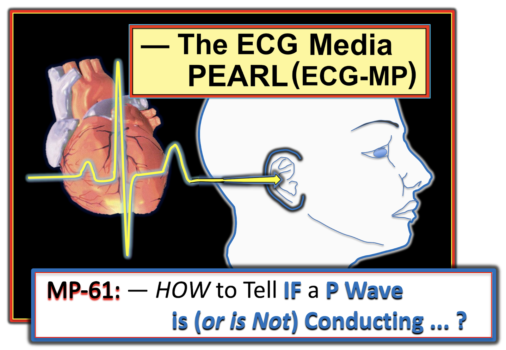
ECG Media PEARL #61 (5:45 phút Audio) — Ôn lại CÁCH nhận biết LIỆU một sóng P có được dẫn truyền hay không? Trả lời được câu hỏi này là MẤU CHỐT để xác định cơ chế của các bản ghi blốc AV/phân ly nhĩ thất phức tạp.